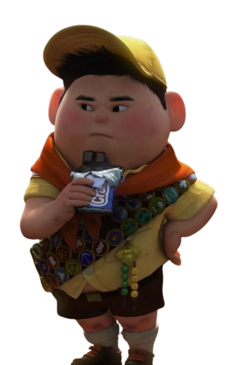

FASE 3
Russell chegou até a casa, e agora ele precisa arrumar uma forma de levá-la até o Sr. Fredricksen.
QUAL É A MELHOR ALTERNATIVA?
(1) Russell chegou até a casa, e agora ele pode aproveitar os balões pra levá-la ao Sr. Fredricksen.
(2) Entrar na mansão do Muntz e confontá-lo
